[SOL: enchant] 신의 권능 : 징벌 Offical Teaser EP.01
Client · Netmarble
2025.08 - 2025.10
Contribution
- False Color를 활용한 샷별 노출 비율 분석 및 라이팅 밸런스 조정
- 주요 캐릭터에 시선이 집중되도록 전쟁 시퀀스의 키라이트, 림라이트, 대비감 설계
- Unreal Engine Hair Groom 표현 최적화를 위한 콘솔 변수 테스트 및 Look R&D
- Houdini FX 팀과 협업하여 거대한 운석 낙하 장면의 시네마틱 라이팅 작업
- 레이어별 렌더링과 최종 합성 과정을 고려한 샷별 렌더 세팅 및 퀄리티 체크
*작업한 컷들 중 일부입니다. Selected shots from the project.
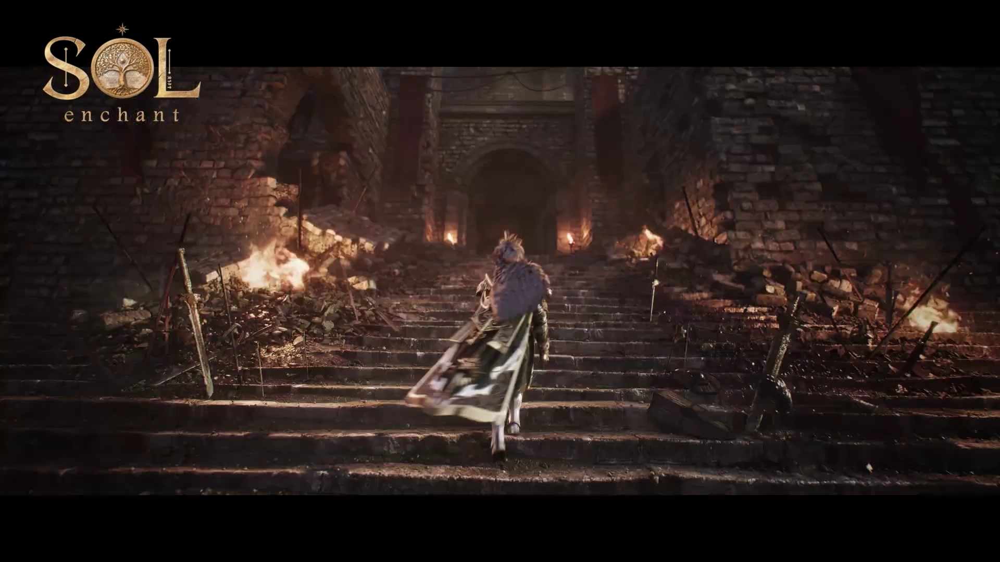


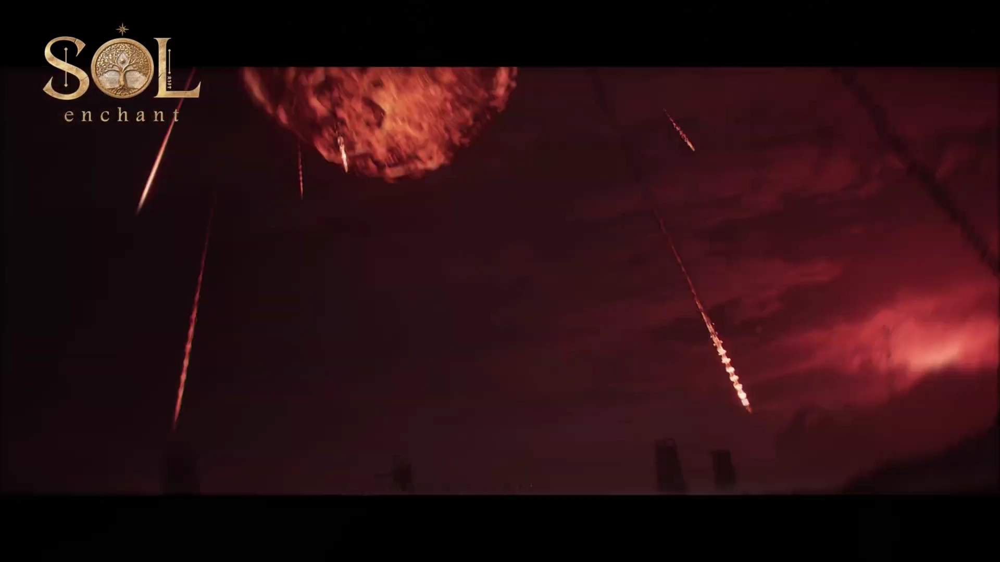
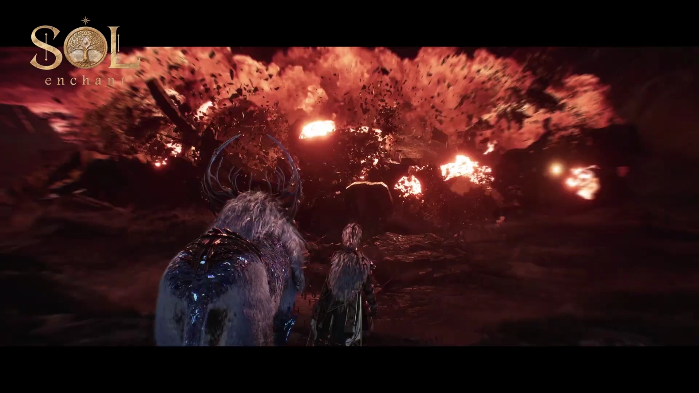

01 — Lighting Process
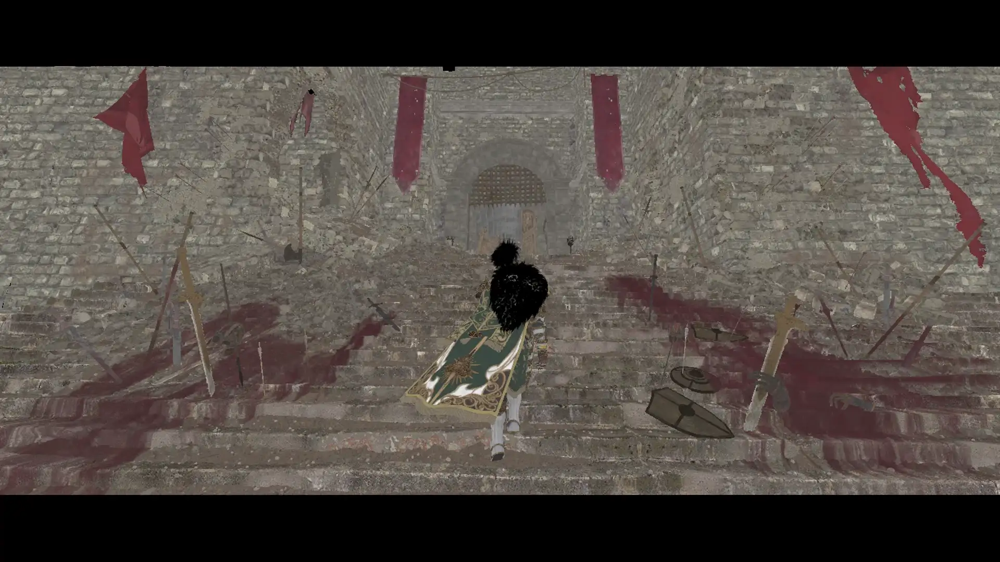
01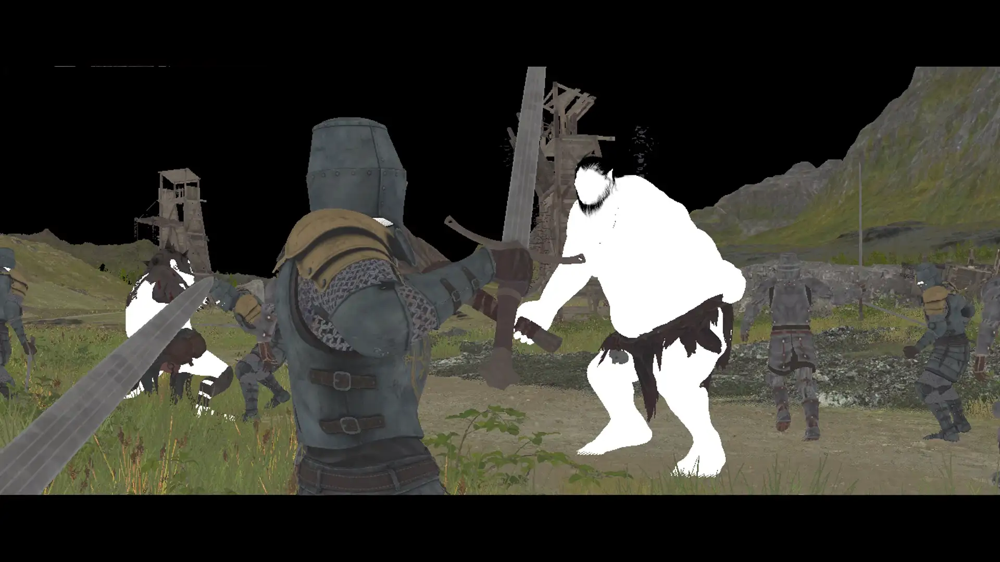
02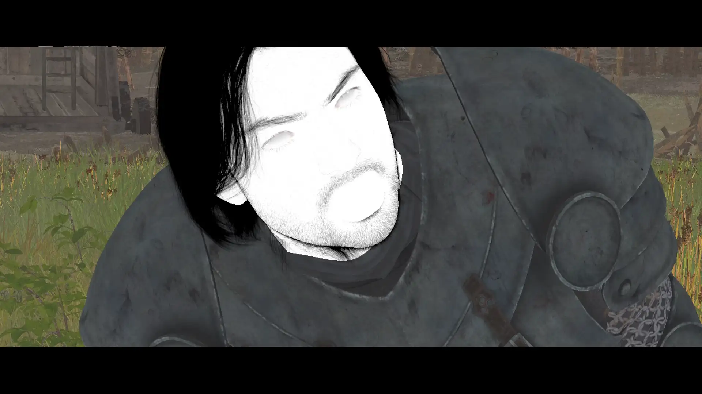
03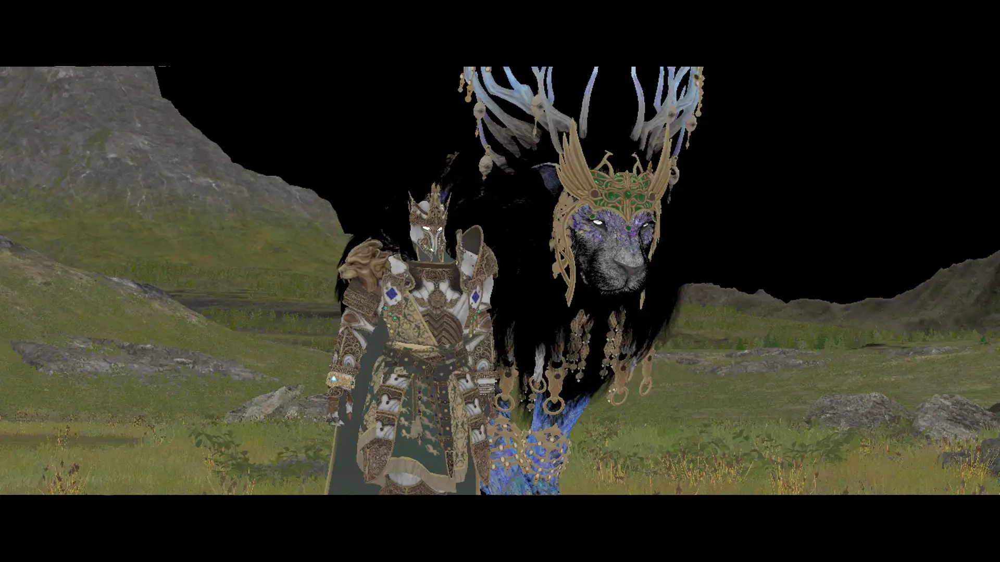
0402 — PBL & Exposure Values
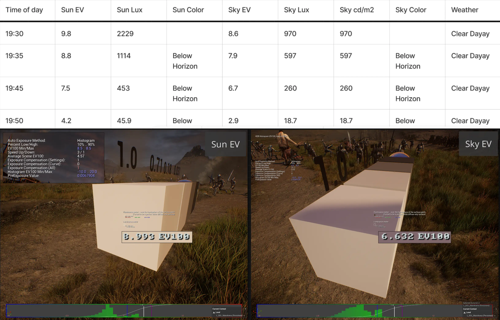
Exposure
조정
PBL physically based lighting
1930~1950 시간대에 Sun EV와 Sky EV 값을 맞춰주었다.
directional light intensity 1200 / EV min 8.5 / max 8.5
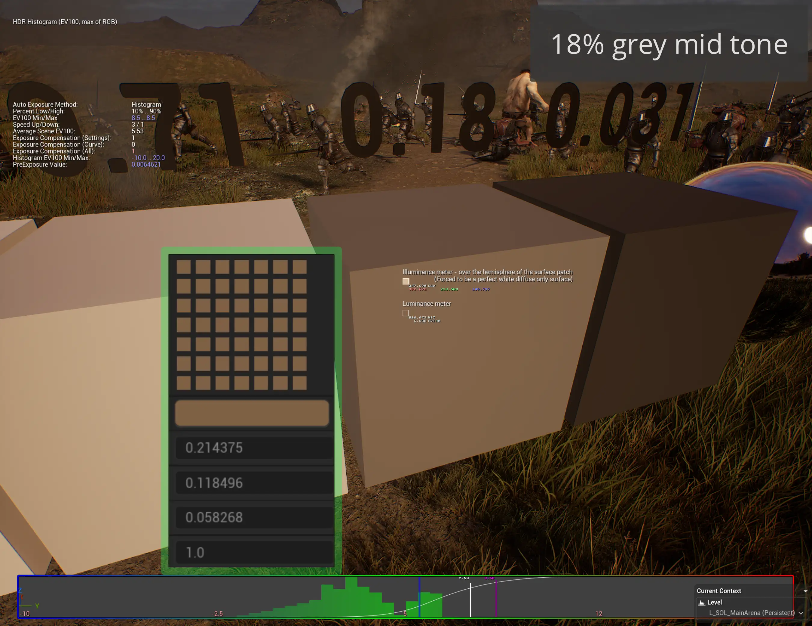
Mid tone 18% grey
조정
18% grey 값의 평균은 0.13
18% grey 값의 평균은 0.13 정도로 0.18보다 낮지만 영상의 전반적인 어두운 분위기를 위해 유지했다.
03 — Challenges
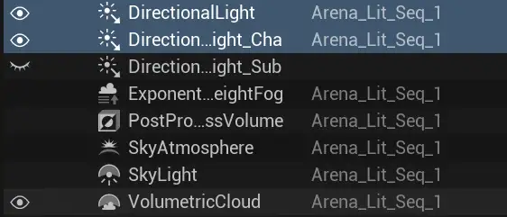
01 · directional light
이슈
directional light를 두 개 썼을 때, Fog 문제
character lighting을 좀 더 수월하게 하기 위해 directional light를 배경(하늘)용 인물용으로 두 개 썼는데, fog가 생각대로 제어되지 않는 현상이 발생했다. 이미 작업이 많이 진행된 상황이라 어쩔 수 없이 넘어갔지만 다음부턴 주의해야 함.
→ 다음 프로젝트에선, 하늘이 중요할 땐 HDRI를 적극 활용한다거나 인물용 라이팅으로선 spot/rect/point light actor를 활용
→ 다수의 태양을 쓰면 Hair Groom shadow에 오류 생길 가능성도 다분..
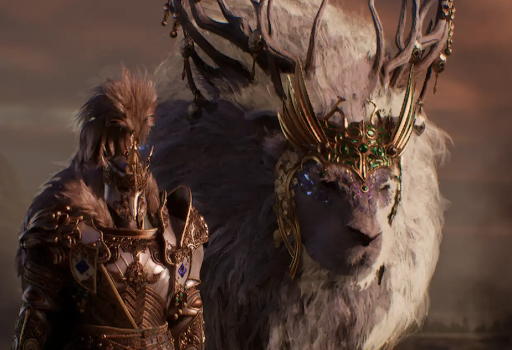
02 · Hair Groom
이슈
Hair Groom 그림자가 제대로 안생기는 현상
마치 빛이 투과된 것 같은 느낌처럼 그림자가 제대로 안생기는 이슈가 있었고 원인은 daylight의 deepshadow, skylight와 연관이 있었다.
→ hairstrands와 skylight가 연관된 console이 굉장히 많았는데, r.hairstrands.skylight 와 연관된 console들을 리스트업 했다.

03 · Hair Groom
이슈
Hair Groom flickering 현상
뷰포트에서는 괜찮으나, 렌더링만 하면 Flickering현상 발생, 주변에 너무 많은 스켈레톤이 원인이었다.
→ MovieRenderGraph를 통해 Groom을 가진 Character들만 따로 렌더링하여 합성하였다.
04 — Tests & Iterations
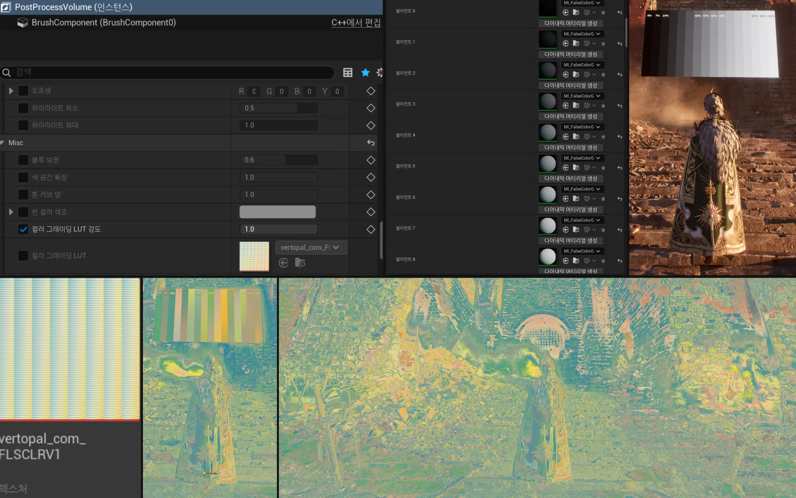
Exposure
test
False Color를 통한 샷별 노출 분석
False Color 뷰로 주요 캐릭터 샷 간 라이팅 밸런스를 통일했다. PPV의 컬러그레이딩LUT 옵션을 활용했다.
→ 샷 전체 노출 기준값을 확인하려 했으나, 생각보다 크게 도움되진 않는 듯, 색도 명확하지 않고
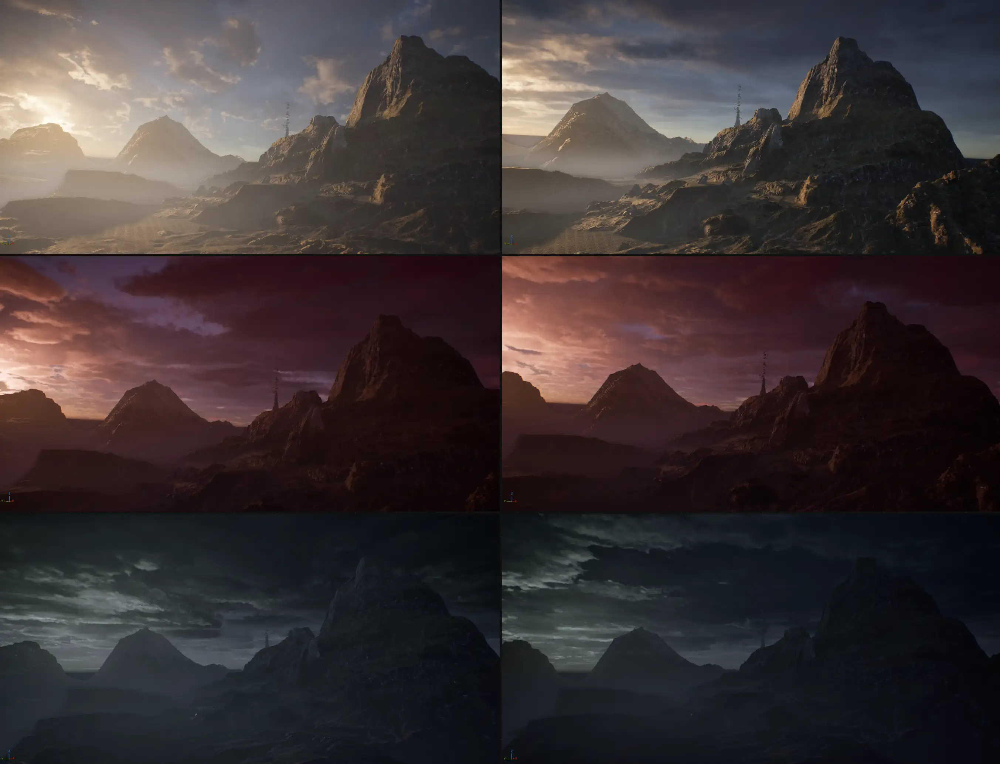
VolumetricCloud
test
무드에 맞는 VolumetricCloudTest
주요 캐릭터에 시선이 집중되도록 전투 씬의 키라이트 방향과 림라이트 강도를 샷별로 개별 튜닝했다.
→ 캐릭터 분리감 및 대비감 확보

Groom
test
Hair Groom raytraced shadow 사용 및 최적화작업
언리얼 공식에선 Groom의 raytraced shadow와 light의 raytraced shadow를 같이 쓰지 말라고 되어있지만, 컴퓨터의 성능으로 밀어붙여 시도했다.
→ Raytraced shadow의 유무는 Look에 큰 차이가 없긴했지만, Cinematic영상을 위해 켜서 진행했다. 물론 Flickering 현상이 동반되어 몇몇 컷은 끈 채로 진행..
04 — Notes
이 프로젝트에서 가장 많은 시간을 쏟은 건 hair groom 이슈였다. hairstrand 관련 console 관한 노하우가 없어서 하나씩 찾아가며 씨름했다.
Houdini FX 팀과의 협업에서는 운석 낙하 시퀀스의 VFX 빛이 환경에 미치는 영향을 실시간으로 맞춰가며 조율했다. 다음에는 VFX와의 라이팅 파이프라인을 초반부터 합의해두는 것이 작업 속도를 크게 높일 것 같다.
전체적으로 lighting sequence를 하나의 시퀀스로 쓰다보니 컨트롤하기 불편했다. 작업할 당시엔 몰랐으나 다음부턴 camera 한 컷당 하나의 시퀀스를 사용하는편이 여러모로 편할 것이다.(굳이 상수 key를 찍어가며 안써도 되는 것에 대해)